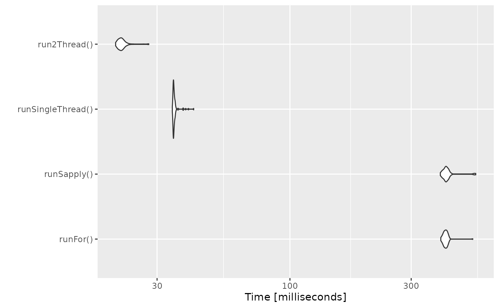
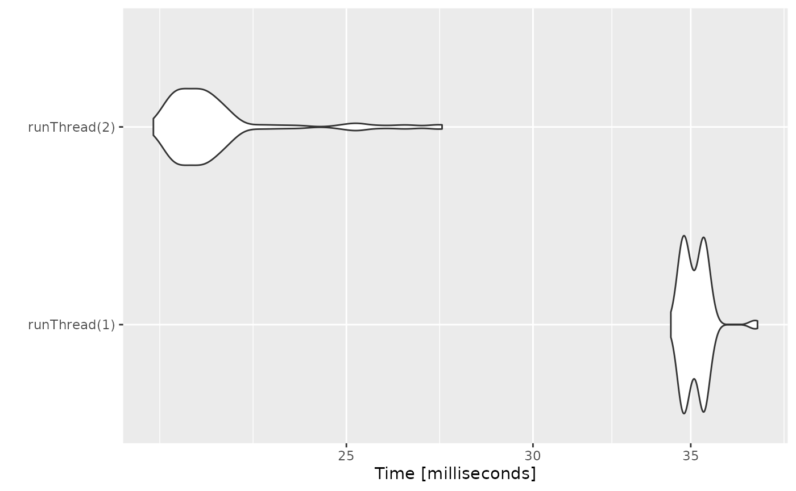

Increasing rxode2 speed by multi-subject parallel solving
rxode2 originally developed as an ODE solver that
allowed an ODE solve for a single subject. This flexibility is still
supported.
The original code from the rxode2 tutorial is below:
library(rxode2)
#> rxode2 2.0.11.9000 using 1 threads (see ?getRxThreads)
#> no cache: create with `rxCreateCache()`
library(microbenchmark)
library(ggplot2)
mod1 <- rxode2({
C2 = centr/V2;
C3 = peri/V3;
d/dt(depot) = -KA*depot;
d/dt(centr) = KA*depot - CL*C2 - Q*C2 + Q*C3;
d/dt(peri) = Q*C2 - Q*C3;
d/dt(eff) = Kin - Kout*(1-C2/(EC50+C2))*eff;
eff(0) = 1
})
## Create an event table
ev <- et() %>%
et(amt=10000, addl=9,ii=12) %>%
et(time=120, amt=20000, addl=4, ii=24) %>%
et(0:240) ## Add Sampling
nsub <- 100 # 100 sub-problems
sigma <- matrix(c(0.09,0.08,0.08,0.25),2,2) # IIV covariance matrix
mv <- rxRmvn(n=nsub, rep(0,2), sigma) # Sample from covariance matrix
CL <- 7*exp(mv[,1])
V2 <- 40*exp(mv[,2])
params.all <- cbind(KA=0.3, CL=CL, V2=V2, Q=10, V3=300,
Kin=0.2, Kout=0.2, EC50=8)For Loop
The slowest way to code this is to use a for loop. In
this example we will enclose it in a function to compare timing.
Running with apply
In general for R, the apply types of functions perform
better than a for loop, so the tutorial also suggests this
speed enhancement
runSapply <- function(){
res <- apply(params.all, 1, function(theta)
mod1$run(theta, ev)[, "eff"])
}Run using a single-threaded solve
You can also have rxode2 solve all the subject simultaneously without collecting the results in R, using a single threaded solve.
The data output is slightly different here, but still gives the same information:
Run a 2 threaded solve
rxode2 supports multi-threaded solves, so another option is to have
2 threads (called cores in the solve options,
you can see the options in rxControl() or
rxSolve()).
Compare the times between all the methods
Now the moment of truth, the timings:
bench <- microbenchmark(runFor(), runSapply(), runSingleThread(),run2Thread())
print(bench)
#> Unit: milliseconds
#> expr min lq mean median uq max
#> runFor() 520.5796 537.49255 549.33381 546.0611 554.84520 680.8948
#> runSapply() 513.0647 536.09480 552.74210 545.4034 557.18595 707.4265
#> runSingleThread() 39.2646 41.62875 43.82422 42.7815 45.23995 55.5894
#> run2Thread() 24.8147 26.10675 27.83732 26.8143 28.33285 43.1365
#> neval
#> 100
#> 100
#> 100
#> 100
autoplot(bench)
#> Coordinate system already present. Adding new coordinate system, which will
#> replace the existing one.
It is clear that the largest jump in performance
when using the solve method and providing all the
parameters to rxode2 to solve without looping over each subject with
either a for or a sapply. The number of
cores/threads applied to the solve also plays a role in the solving.
We can explore the number of threads further with the following code:
runThread <- function(n){
solve(mod1, params.all, ev, cores=n)[,c("sim.id", "time", "eff")]
}
bench <- eval(parse(text=sprintf("microbenchmark(%s)",
paste(paste0("runThread(", seq(1, 2 * rxCores()),")"),
collapse=","))))
print(bench)
#> Unit: milliseconds
#> expr min lq mean median uq max neval
#> runThread(1) 39.1906 41.17965 43.06462 42.43360 43.65945 56.5936 100
#> runThread(2) 23.8654 25.55135 26.76999 26.18425 27.33850 36.8769 100
autoplot(bench)
#> Coordinate system already present. Adding new coordinate system, which will
#> replace the existing one.
There can be a suite spot in speed vs number or cores. The system type (mac, linux, windows and/or processor), complexity of the ODE solving and the number of subjects may affect this arbitrary number of threads. 4 threads is a good number to use without any prior knowledge because most systems these days have at least 4 threads (or 2 processors with 4 threads).
A real life example
Before some of the parallel solving was implemented, the fastest way
to run rxode2 was with lapply. This is how Rik
Schoemaker created the data-set for nlmixr comparisons, but
reduced to run faster automatic building of the pkgdown website.
library(rxode2)
library(data.table)
#Define the rxode2 model
ode1 <- "
d/dt(abs) = -KA*abs;
d/dt(centr) = KA*abs-(CL/V)*centr;
C2=centr/V;
"
#Create the rxode2 simulation object
mod1 <- rxode2(model = ode1)
#Population parameter values on log-scale
paramsl <- c(CL = log(4),
V = log(70),
KA = log(1))
#make 10,000 subjects to sample from:
nsubg <- 300 # subjects per dose
doses <- c(10, 30, 60, 120)
nsub <- nsubg * length(doses)
#IIV of 30% for each parameter
omega <- diag(c(0.09, 0.09, 0.09))# IIV covariance matrix
sigma <- 0.2
#Sample from the multivariate normal
set.seed(98176247)
rxSetSeed(98176247)
library(MASS)
mv <-
mvrnorm(nsub, rep(0, dim(omega)[1]), omega) # Sample from covariance matrix
#Combine population parameters with IIV
params.all <-
data.table(
"ID" = seq(1:nsub),
"CL" = exp(paramsl['CL'] + mv[, 1]),
"V" = exp(paramsl['V'] + mv[, 2]),
"KA" = exp(paramsl['KA'] + mv[, 3])
)
#set the doses (looping through the 4 doses)
params.all[, AMT := rep(100 * doses,nsubg)]
Startlapply <- Sys.time()
#Run the simulations using lapply for speed
s = lapply(1:nsub, function(i) {
#selects the parameters associated with the subject to be simulated
params <- params.all[i]
#creates an eventTable with 7 doses every 24 hours
ev <- eventTable()
ev$add.dosing(
dose = params$AMT,
nbr.doses = 1,
dosing.to = 1,
rate = NULL,
start.time = 0
)
#generates 4 random samples in a 24 hour period
ev$add.sampling(c(0, sort(round(sample(runif(600, 0, 1440), 4) / 60, 2))))
#runs the rxode2 simulation
x <- as.data.table(mod1$run(params, ev))
#merges the parameters and ID number to the simulation output
x[, names(params) := params]
})
#runs the entire sequence of 100 subjects and binds the results to the object res
res = as.data.table(do.call("rbind", s))
Stoplapply <- Sys.time()
print(Stoplapply - Startlapply)
#> Time difference of 11.72108 secsBy applying some of the new parallel solving concepts you can simply run the same simulation both with less code and faster:
rx <- rxode2({
CL = log(4)
V = log(70)
KA = log(1)
CL = exp(CL + eta.CL)
V = exp(V + eta.V)
KA = exp(KA + eta.KA)
d/dt(abs) = -KA*abs;
d/dt(centr) = KA*abs-(CL/V)*centr;
C2=centr/V;
})
omega <- lotri(eta.CL ~ 0.09,
eta.V ~ 0.09,
eta.KA ~ 0.09)
doses <- c(10, 30, 60, 120)
startParallel <- Sys.time()
ev <- do.call("rbind",
lapply(seq_along(doses), function(i){
et() %>%
et(amt=doses[i]) %>% # Add single dose
et(0) %>% # Add 0 observation
## Generate 4 samples in 24 hour period
et(lapply(1:4, function(...){c(0, 24)})) %>%
et(id=seq(1, nsubg) + (i - 1) * nsubg) %>%
## Convert to data frame to skip sorting the data
## When binding the data together
as.data.frame
}))
## To better compare, use the same output, that is data.table
res <- rxSolve(rx, ev, omega=omega, returnType="data.table")
endParallel <- Sys.time()
print(endParallel - startParallel)
#> Time difference of 0.1919084 secsYou can see a striking time difference between the two methods; A few things to keep in mind:
rxode2use the thread-safe sitmothreefryroutines for simulation ofetavalues. Therefore the results are expected to be different (also the random samples are taken in a different order which would be different)This prior simulation was run in R 3.5, which has a different random number generator so the results in this simulation will be different from the actual nlmixr comparison when using the slower simulation.
This speed comparison used
data.table.rxode2usesdata.tableinternally (when available) try to speed up sorting, so this would be different than installations wheredata.tableis not installed. You can force rxode2 to useorder()when sorting by usingforderForceBase(TRUE). In this case there is little difference between the two, though in other examplesdata.table’s presence leads to a speed increase (and less likely it could lead to a slowdown).
Want more ways to run multi-subject simulations
The version since the tutorial has even more ways to run
multi-subject simulations, including adding variability in sampling and
dosing times with et() (see rxode2
events for more information), ability to supply both an
omega and sigma matrix as well as adding as a
thetaMat to R to simulate with uncertainty in the
omega, sigma and theta matrices;
see rxode2
simulation vignette.
Session Information
The session information:
sessionInfo()
#> R version 4.2.2 (2022-10-31)
#> Platform: x86_64-pc-linux-gnu (64-bit)
#> Running under: Ubuntu 20.04.5 LTS
#>
#> Matrix products: default
#> BLAS: /usr/lib/x86_64-linux-gnu/blas/libblas.so.3.9.0
#> LAPACK: /usr/lib/x86_64-linux-gnu/lapack/liblapack.so.3.9.0
#>
#> locale:
#> [1] LC_CTYPE=C.UTF-8 LC_NUMERIC=C LC_TIME=C.UTF-8
#> [4] LC_COLLATE=C.UTF-8 LC_MONETARY=C.UTF-8 LC_MESSAGES=C.UTF-8
#> [7] LC_PAPER=C.UTF-8 LC_NAME=C LC_ADDRESS=C
#> [10] LC_TELEPHONE=C LC_MEASUREMENT=C.UTF-8 LC_IDENTIFICATION=C
#>
#> attached base packages:
#> [1] stats graphics grDevices utils datasets methods base
#>
#> other attached packages:
#> [1] MASS_7.3-58.1 data.table_1.14.4 ggplot2_3.4.0
#> [4] microbenchmark_1.4.9 rxode2_2.0.11.9000
#>
#> loaded via a namespace (and not attached):
#> [1] Rcpp_1.0.9 lattice_0.20-45 rprojroot_2.0.3
#> [4] digest_0.6.30 utf8_1.2.2 rxode2random_2.0.9.9000
#> [7] R6_2.5.1 backports_1.4.1 sys_3.4.1
#> [10] evaluate_0.17 highr_0.9 pillar_1.8.1
#> [13] rlang_1.0.6 rxode2ll_2.0.9.9000 jquerylib_0.1.4
#> [16] checkmate_2.1.0 rmarkdown_2.17 pkgdown_2.0.6
#> [19] qs_0.25.4 textshaping_0.3.6 desc_1.4.2
#> [22] dparser_1.3.1-8 stringr_1.4.1 PreciseSums_0.5
#> [25] munsell_0.5.0 compiler_4.2.2 xfun_0.34
#> [28] pkgconfig_2.0.3 systemfonts_1.0.4 htmltools_0.5.3
#> [31] tidyselect_1.2.0 tibble_3.1.8 rxode2parse_2.0.13
#> [34] fansi_1.0.3 crayon_1.5.2 dplyr_1.0.10
#> [37] withr_2.5.0 grid_4.2.2 nlme_3.1-160
#> [40] jsonlite_1.8.3 gtable_0.3.1 lifecycle_1.0.3
#> [43] magrittr_2.0.3 units_0.8-0 scales_1.2.1
#> [46] RcppParallel_5.1.5 cli_3.4.1 stringi_1.7.8
#> [49] cachem_1.0.6 farver_2.1.1 fs_1.5.2
#> [52] bslib_0.4.1 ragg_1.2.4 generics_0.1.3
#> [55] vctrs_0.5.0 stringfish_0.15.7 lotri_0.4.2
#> [58] RApiSerialize_0.1.2 tools_4.2.2 glue_1.6.2
#> [61] purrr_0.3.5 rxode2et_2.0.9.9000 fastmap_1.1.0
#> [64] yaml_2.3.6 colorspace_2.0-3 memoise_2.0.1
#> [67] knitr_1.40 sass_0.4.2